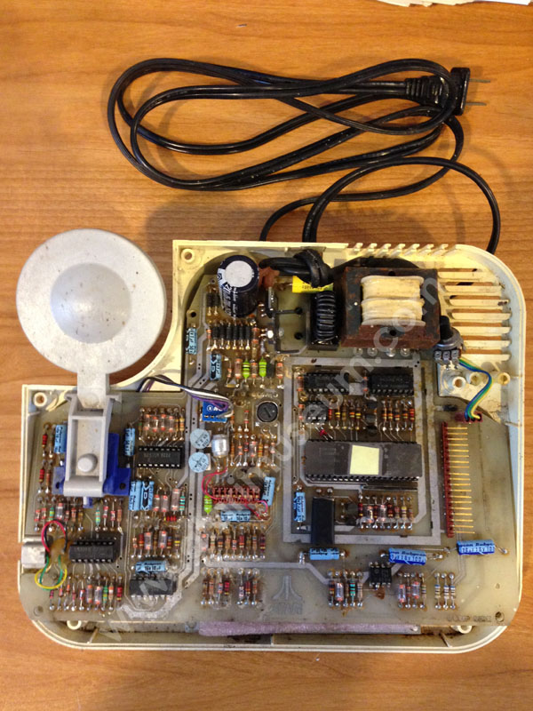

It all started with a meeting at Warner
Communications with Steven Bristow. He came to demonstrate an idea
that he and fellow Atari engineers had been tinkering with. He was
very interested in the technology being used in Home Intercom called
Powerline Communication Intercoms. These intercom
systems would plug into the power outlets in
a house which allowed two people to be able to talk to one another
through the home electrical wiring. Steve explained to the Board
that this type of technology could be the basis for a whole new line
of products for Atari outside of its Entertainment focus. That
telephones and home controllers could be created to allow people to
be able to have phones through out their homes to receive and place
calls, to be able to use them as intercoms, room monitors and more.
Additional features such as being able to control power modules to
turn lights on and off as well as other devices could also be
created.
The Warner Board fully supported this new idea to
the point where they decided Atari should have a new Division that
these technologies would be developed and sold under called Ataritel.
So Steve return to California and began to assembled his team and go
to work...

This is a prototype of an Atari
"Telectra" Powerline phone extension set. Not that
is does not have a phone cord, but only a power cord for
connectivity.